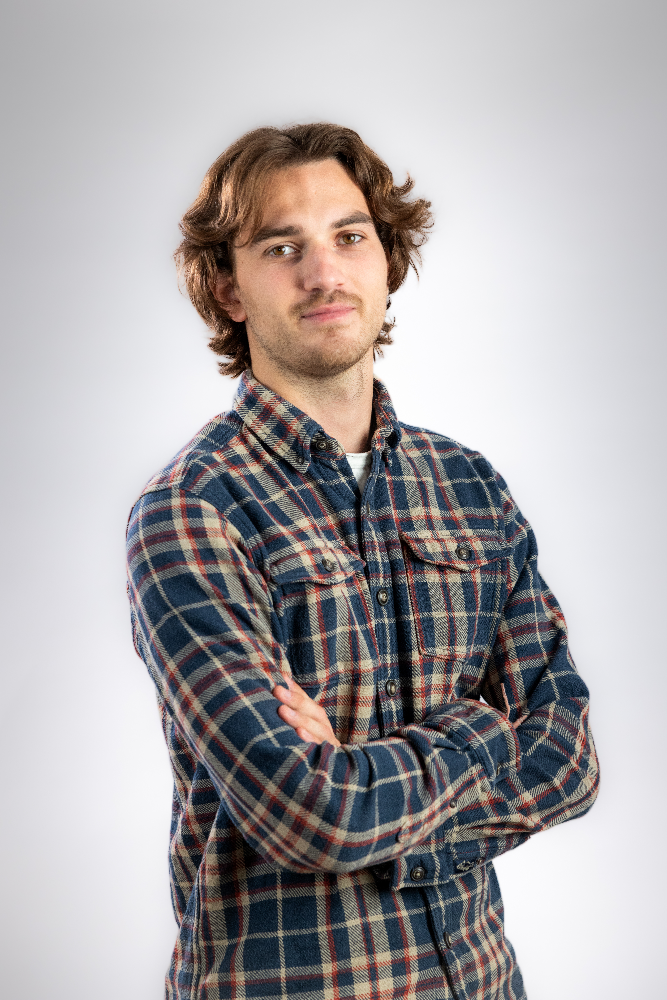

Réalisateur et photographe, je cherche moins la performance brute que l'histoire derrière l'effort.

Réalisateur et photographe basé à Bordeaux, je conçois des images et des films pour des univers variés des vignobles bordelais aux sportifs, en passant par la restauration qui souhaitent raconter avec justesse, singularité et authenticité.
Reportages, films de marque, contenus pour les réseaux sociaux : en photo comme en vidéo, je développe une approche originale dans mes prises de vue. Je vais là où l'œil n'a pas l'habitude, j'amène un regard neuf sur une discipline, un lieu, une histoire. Le drone et notamment le FPV fait partie de ces angles que je recherche pour offrir une perspective inédite.
Je ne cherche pas la perfection, mais la beauté et l'émotion.
Trois principes qui guident chaque projet, du premier repérage à la dernière minute d'étalonnage.
Avant la technique, le récit. On définit ensemble l'intention, l'angle et l'émotion à transmettre, pour que chaque plan serve un propos.
Météo, lumière, effort : je tourne dans les conditions du sujet, jamais en studio. C'est là que naissent les images justes et vivantes.
Montage rythmé, son soigné, étalonnage adapté.
La finition fait la différence entre une vidéo et un film.
Un projet, une question, une envie de collaborer ? Écrivez-moi, je réponds vite.
lancelot.prd@gmail.com